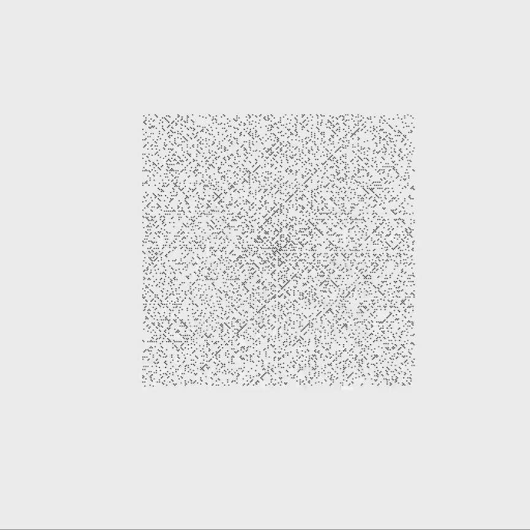
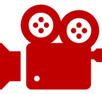

- Java
- Spirala liczb pierwszych, znana również jako spirala Ulama,
to wykres, w którym liczby całkowite dodatnie są ułożone w spiralę,
z liczbami pierwszymi wskazanymi w pewien sposób wzdłuż spirali.  Link do projektu
Link do projektu

- HTML, CSS, JavaScript
- Projekt tej strony internetowej, w ramach projektu na zajecia na uczelnii
na przedmiot SSW, wykorzystany jest HTML, CSS oraz podstawy JS - Link do projektu
- Adobe Photoshop, Adobe Premier Pro
- Film zrealizowany na zajęciach z TEM, grafika do filmu została obrobiona
w Adobe Photoshop, film został zedytowany w Adobe Premier Pro - Link do projektu
